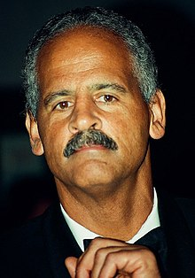
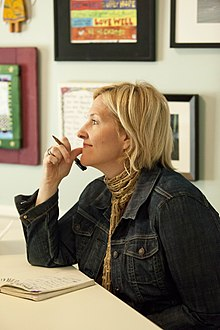

Ellen Johnson Sirleaf (born Ellen Eugenia Johnson, 29 October 1938) is a Liberian politician who served as the 24th President of Liberia from 2006 to 2018. Sirleaf was the first elected female head of state in Africa. Sirleaf was born in Monrovia to a Gola father and Kru-German mother. She was educated at the College of West Africa. She completed her education in the United States, where she studied at Madison Business College and Harvard University. She returned to Liberia to work in William Tolbert's government as Deputy Minister of Finance from 1971 to 1974. Later she worked again in the West, for the World Bank in the Caribbean and Latin America. In 1979, she received a cabinet appointment as Minister of Finance, serving to 1980. After Samuel Doe seized power that year in a coup d'état and executed Tolbert, Sirleaf fled to the United States. She worked for Citibank and then the Equator Bank. She returned to Liberia to contest a senatorial seat for Montserrado County in 1985, an election that was disputed. She was arrested as a result of her open criticism of the military government in 1985 and was sentenced to ten years imprisonment, although was later released.[1] Sirleaf continued to be involved in politics. She finished in second place at the 1997 presidential election, which was won by Charles Taylor. She won the 2005 presidential election and took office on 16 January 2006. She was re-elected in 2011. She was the first woman in Africa elected as president of her country. She won the Nobel Peace Prize in 2011, in recognition of her efforts to bring women into the peacekeeping process. She has received numerous other awards for her leadership. In June 2016, Sirleaf was elected as the Chair of the Economic Community of West African States, making her the first woman to hold the position since it was created.[2]
Graham was born on March 6, 1951, in the Whitesboro section of Middle Township, New Jersey, the son of Mary Jacobs Graham and Stedman Graham Sr. He is one of six children. He stands 6 feet 6 inches (198 cm) tall. He received a bachelor's degree in social work from Hardin-Simmons University in 1974 and a master's degree in education from Ball State University in 1979. Graham played college basketball at Hardin-Simmons. Graham eventually moved to High Point, North Carolina, to establish himself in public relations. At B & C Associates, Graham worked on behalf of black causes and worked with many distinguished clients, including author Maya Angelou and South African activist Winnie Mandela.[3] He is also founder of Chicago, Illinois's AAD (formerly, Athletes Against Drugs), a non-profit organization that provides services to youth and has awarded over $1.5 million in scholarships since its founding in 1985. It also arranged for sports figures to educate children about substance abuse.[3] He is also a member of the Indiana Broadcasting Hall of Fame. In 1988 Graham created S. Graham & Associates, a Chicago-based corporate and educational marketing and consulting firm. Graham was an adjunct professor at Full Sail University. Graham has delivered speeches at many public and private schools on the topics of identity and self-awareness.
Casandra Brené Brown (born 1965) is an US American professor, lecturer, author, and podcast host. Brown holds the Huffington Foundation's Brené Brown Endowed Chair at the University of Houston's Graduate College of Social Work and is a visiting professor in management at McCombs School of Business at the University of Texas at Austin. Brown was born on November 18, 1965,[2] in San Antonio, Texas, where her parents, Charles Arthur Brown and Casandra Deanne Rogers,[2] baptized her in the Episcopal Church. She is the oldest of four children.[3] Her family then moved to New Orleans,[4] and raised her as a Catholic.[5] She left the Catholic Church and returned to the Episcopal community with her husband, Steve Alley, and their two children two decades later. The family now lives in Houston.[6] She completed a Bachelor of Social Work degree at the University of Texas at Austin in 1995, followed by a Master of Social Work degree in 1996,[7] and a Doctor of Philosophy degree in social work at the University of Houston in 2002.[8] Brene Brown had “a Pupu platter of addictions” as well, a combination of alcohol, smoking, emotional eating and an addiction to control. Brown has spent decades studying the topics of courage, vulnerability, shame, and empathy. She is, to date, the author of five number-one New York Times bestsellers, namely The Gifts of Imperfection, Daring Greatly, Rising Strong, Braving the Wilderness, and Dare to Lead. Brené hosts the Unlocking Us and Dare to Lead podcasts. Her TED talk, "The Power of Vulnerability", has been widely viewed.[10][11][12] Her filmed lecture, Brené Brown: The Call to Courage, debuted on Netflix in 2019. Brown has spent her research career as a professor at her alma mater, the University of Houston's Graduate College of Social Work.[13] With research focused on the themes of authentic leadership and wholeheartedness in families, schools, and organizations, she has given a 2012 TED talk and two 2010 TEDx talks.[14][15] In March 2013, she talked with Oprah Winfrey on Super Soul Sunday about her book, Daring Greatly.[16] Brown says she drew the title of that book from a 1910 Theodore Roosevelt speech "Citizenship in a Republic", given at the Sorbonne.[17] Brown is CEO of "The Daring Way", a professional training and certification program on the topics of vulnerability, courage, shame, and empathy.[18] Brown has a chapter giving advice in Tim Ferriss' book Tools of Titans.

Barack Hussein Obama II born August 4, 1961) is an American politician and attorney who served as the 44th president of the United States from 2009 to 2017. A member of the Democratic Party, Obama was the first African-American president of the United States. He previously served as a U.S. senator from Illinois from 2005 to 2008 and as an Illinois state senator from 1997 to 2004. Obama was born in Honolulu, Hawaii. After graduating from Columbia University in 1983, he worked as a community organizer in Chicago. In 1988, he enrolled in Harvard Law School, where he was the first black president of the Harvard Law Review. After graduating, he became a civil rights attorney and an academic, teaching constitutional law at the University of Chicago Law School from 1992 to 2004. Turning to elective politics, he represented the 13th district in the Illinois Senate from 1997 until 2004, when he ran for the U.S. Senate. Obama received national attention in 2004 with his March Senate primary win, his well-received July Democratic National Convention keynote address, and his landslide November election to the Senate. In 2008, he was nominated by the Democratic Party for president a year after beginning his campaign, and after a close primary campaign against Hillary Clinton. Obama was elected over Republican nominee John McCain in the general election and was inaugurated alongside his running mate, Joe Biden, on January 20, 2009. Nine months later, he was named the 2009 Nobel Peace Prize laureate. Obama signed many landmark bills into law during his first two years in office. The main reforms that were passed include the Affordable Care Act (commonly referred to as ACA or "Obamacare"), although without a public health insurance option, the Dodd–Frank Wall Street Reform and Consumer Protection Act, and the Don't Ask, Don't Tell Repeal Act of 2010. The American Recovery and Reinvestment Act of 2009 and Tax Relief, Unemployment Insurance Reauthorization, and Job Creation Act of 2010 served as economic stimuli amidst the Great Recession. After a lengthy debate over the national debt limit, he signed the Budget Control and the American Taxpayer Relief Acts. In foreign policy, he increased U.S. troop levels in Afghanistan, reduced nuclear weapons with the United States–Russia New START treaty, and ended military involvement in the Iraq War. He ordered military involvement in Libya for the implementation of the UN Security Council Resolution 1973, contributing to the overthrow of Muammar Gaddafi. He also ordered the military operation that resulted in the killing of Osama bin Laden.